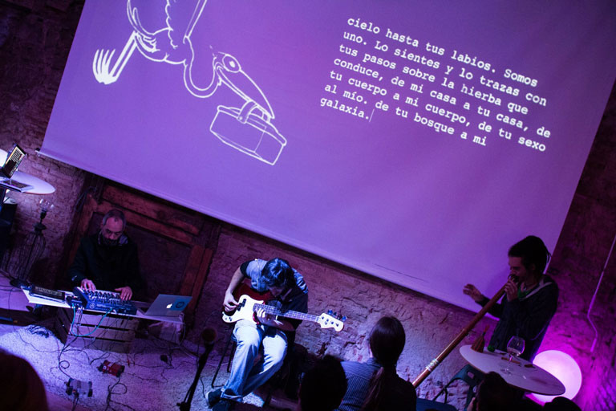

La escritura
Crear un texto en directo, sin detenerse.

<SCRI> B
SUTURA TEATRO
Sutura Teatro experimenta con la creación escénica, la ciencia y la tecnología.
El juego es una herramienta de exploración y expresión artística.




¿Cómo escenificar la escritura?
¿Cómo gamificar la escritura?
 www.scribshow.es/musa
www.scribshow.es/musaDos voluntarias para crear un texto en directo y probar el juego.
Escanea el QR con tu móvil y participa.
scribshow.es/musaElige equipo y envía palabras para inspirar a las escritoras.
RONDA FINAL
Abrimos el diálogo sobre escritura en vivo, juego y creación escénica.